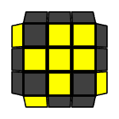

Orientation of the last layer
Orientation of the Last Layer (OLL) solves the top face by applying algorithms.
Beginner OLL (2-look OLL) has 2 steps:
- Orient the edges (3 algorithms)
- Orient the corners (7 algorithms)
Some of these algorithms were already taught in the beginner method. Other algorithms can be memorized by patterns (which is a common technique for memorizing algorithms) shown in the video.
https://www.youtube.com/watch?v=GhmYBgLoQQg
Orient the edges:
| Dot Shape |  |
F R U R' U' F' f R U R' U' f' |
| I-Shape | F R U R' U' F' | |
| L-Shape | f R U R' U' f' |
Orient the corners:
| Antisune |  | R U2 R' U' R U' R' |
| H | R U R' U R U' R' U R U2 R' | |
| L | F R' F' r U R U' r' | |
| Pi | R U2 R2 U' R2 U' R2 U2 R | |
| Sune | R U R' U R U2 R' | |
| T | r U R' U' r' F R F' | |
| U | R2 D R' U2 R D' R' U2 R' |